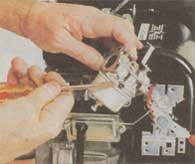

Refurbish An Oldie-But-Goodie
February/March 1997
GARDEN & YARD
Refurbish an Oldie-but-Goodie
Evaluating, buying, and restoring used power gardening equipment.
By John Vivian
You say you don't fancy the idea of spending as much for a new gardening machine as you'd pay for a barn roof or a good used truck? Well, scout around for a good used garden tractor, tiller, or shredder. Your selection may be limited to older models, but you'll save at least half the new price and may get a real bargain. Even rebuilding the engine in an older model will work out to be significantly less expensive than buying new. Here's how to find an older gem and make it shine again.
Unlike rotary mowers, few serious gardening machines have been criminally neglected or worked to death. Few single-function gardening machines get more than a few hours of use per season. Multiple-use models such as garden tractor/tillers with snowblower, shredder, and mower attachments can work happily year-round. But hardly any in non-commercial use will see service more than three or four times per month-and they are made with big truck-tough running gear and industrial/commercial engines designed to go 5,000 hours before needing a rebuild. Small wonder that 50-year-old lawn tractors are still working faithfully (for owners who maintain them conscientiously).
And don't evaluate the cost of a used power gardening machine by comparing it with alternative uses for the cash-or even for a loan. Price out the hours and hours and hours of sweat-labor it will spare you (and maybe your heirs) every year for the next half-century.
MOTHER's Choice
Last fall (the best season to get a good price on gardening equipment), MOTHER went looking for a machine to establish and maintain our new country gardens. We settled on a '60s-era Gravely "L" with 12 volt battery electric start, a big rotary mower/brush-hog, a sickle bar, riding sulky, dozer-blade for snow or gravel, and extra wheels with snow chains. Prices for similar packages ranged from $1,500 to our cost, $350. A like-new rotary plow costs another $150 (we could have dickered it down some), and we are still looking for a tiller and cultivator frame and spades.
Beauty Is Tin Deep
First impressions of used garden gear can be misleading. A gardener often fails to realize that Old Faithful isn't needed any longer till it's been sitting idle for months or years. So many perfectly good old tillers, tractors, and shredders have an accumulation of dried mud, dings, cobwebs, and surface rust that may signify little.
Your best indication of usage is tire-condition. New tires on an old machine are rare. The cleats molded into the rubber tires of tractors and tillers wear slowly on soil and sod. If you see low and thin, badly-worn cleats with rounded edges, cracks, and nicks you know the machine has worked on pavement or has really been around. Most tires are worn but still serviceable after 20 years or more.
Don't worry much about paint condition or surface rust on tractors and tillers. Bright original paint means the machine has been stored inside and seldom left out in sun and rain - indication of excellent past treatment and little use. Desirable, but not essential. How much full-scale farm equipment have you seen just left in the fields (with sensitive parts well-greased) ready for uses year after year? It is tough stuff.
Faded paint indicates outside storage, as sun bleaches. Repaintings suggest multiple owners (typical of older machines such as MOTHER'S new/old Gravely that has circulated locally among several owners...for the same sales price...for decades). Our machine is painted green over the original orange by someone who just liked the color. So do we.
Rusted tractor shrouds, tiller-tine hoods, gas tanks, and most other sheet metal parts can be ignored or replaced easily and cheaply.
But surface rust does count on shredder-grinders made with a steel framework. The bearings that hold the whirling chopper reels are bolted or welded to the sides of the frame, which are exposed to acidic plant material that encourages rust nearly as much as road salt corrodes automobile tin.
Shake the reel hard and be sure it does not move up and down within the bearings. You can replace bearings, but must also replace the main shaft ...which means you need to gut the machine and replace all the moving parts. Might as well buy a new shredder.
The fasteners that hold the bearings in, and/or the metal around the punch out made for the bearing casing, and/or bolts can corrode. The flail reel vibrates in use and will quickly rattle loose in a corroded sheet-metal frame even if the bearings remain solid. (This is why we are partial to the old WW II line, with its drop-dead sturdy cast-iron side-frames.) So, inspect an old shredder carefully for rust around bearings, bolts that hold the frame together, and around safety shields and baffles. Lightly rusted nuts and bolt heads can be gussied up with a wire brush and paint. But look for rot in the sheet metal they poke through. Reject any machine with noticeable frame corrosion.
Try to make any self-propelled machine wobble on its wheels. If it does cant to one side, you may have bad wheel bearings. Shake tiller assemblies, PTO shafts, and pulley journals. All should set solidly in their bearings. Pulleys that wobble or are loose on the shaft may be replaceable, as the soft metal of the pulley hub wears before the shaft. But if an axle or drive shaft is at all loose, you may be asking for major repairs.
Engines
Except for older machines with a proprietary engine ('20s models, Gravely through the Model "L," rare Franklin tractors and others that belong in a museum rather than in your corn patch), engines are purchased from Briggs, Tecumseh, or another engine maker. The gardening machine and its engine are made and warranted by separate manufacturers. And though the engine appears to be the heart of the equipment, it isn't. Engines are expendable and interchangeable.
It's instructive to examine the prepaid maintenance agreements and "extended warranties" offered for garden machines by major retailers. Sears' 1996 agreement for its shredder grinder lists only four engine repairs: tune up ($15), replace muffler ($19), replace carburetor ($60) - each with an hour of labor. The fourth is to replace the entire engine at a cost of $350 plus an hour and a half of labor. This is typical of today's labor market and increasingly modular manufacturing protocols. Few franchised small-engine shops bother to repair a carb; indeed, many are "throw-away" designs that are crimped or riveted (not screwed) together, so they can't be disassembled for repair. And, if anything goes wrong inside the engine, labor and new parts cost more than a new engine, so the bad one is simply replaced.
Every town has a few small-engine mechanics who have the tools, know-how, and time to go into engines, and many are very good at it. But unless you know such an old pro personally, you are best advised to follow the times. If an under 10 hp engine is bad, plan on replacing it. The cost ranges from $150 and up, and you can do it yourself (see below). If you know a good small-engine rebuilder, you can save money by rebuilding the larger power plants. Cost is usually about half the price of a new engine.
To check an engine, ignore a rusted-out muffler and surface grease or dirt. Mufflers rust more in disuse than hard service and they are easily and cheaply replaced (soak with penetrating oil, use hammer and chisel to loosen keeper ring, and unscrew with a monkey wrench.)
First, remove air cleaner housing cover and inspect the cleaner element. If it is pristine, the owner is conscientious at maintenance or is trying to impress you. A light coating of dust on the element and outer surface of the housing is normal. If element is thick with dust or housing is packed with dust, grass, and dead moths, the machine has not been well-treated-no matter how glossy the outside. Remove the element slowly and carefully; the entire inside of the housing and carb behind the inner element gasket should be shiny clean. If it is even a bit dusty, dirt is getting into the engine and, acting like sandpaper, is wearing down the moving parts.
Pull dipstick and inspect oil on it. Fresh-changed oil can be a warning sign: Is the owner conscientious or trying to mask problems? Dark but still clear oil is preferable-suggesting that the machine has been used, but not abused. Dark and murky is less good. Black, murky, and gritty means poor maintenance. If oil smells burned, the bearings may be going. If no oil shows on the dipstick, the engine is leaking or using oil. Whatever, the owner is negligent for not keeping it topped up and the engine may shortly be toast.
Using proper tools, remove the spark plug (best to ask owners to remove it; if they don't know how, be doubly alert to problems). The little hook on the end (the electrode) should look clean and dry - a sort of gray. If it is thinner on the end than the base, it needs changing; and any performance problems may be due to an old plug. If the plug end is black and greasy, the oil is blowing by piston or valves - a bad sign.
The most reliable way I know to evaluate the insides of an engine (short of tearing it apart) is to start it and get it warmed up, then look and listen carefully. A loud knock that may be accompanied by a small shudder (as opposed to a click or a tick) indicates a major problem (rod/crank bearing or main bearings going or gone.) Even-spaced, gentle tick-tick-ticks are normal. Listen for uneven clicks, especially if, when you slow engine speed, the engine makes blue smoke or twitches in time with the off-beat click. This can be a bad valve.
Use the throttle to accelerate and decelerate fairly sharply. If the engine sputters and coughs without making blue smoke it has a carburetion problem. Black smoke is unburned fuel (unless you sense a bad valve) - also a carburetion problem.
Don't worry if an engine-especially one of the large, old single-cylinder models - smokes briefly on start-up. A puff of black smoke on changing speeds is usually a fouled spark plug or too-rich carb setting. But if it puffs blue smoke on change of speed, the rings are worn, which means the piston and cylinder are also scratched. Using a thick engine oil may give the engine added life, but the problem will never cure itself and eventually the engine will fail.
Fix-Up
Many apparent carburetion problems can be cured by installing a new spark plug. Remove the old plug with a proper spark plug socket on your ratchet handle. Take the old plug to the parts store and have them gap a replacement plug for you. (The most common small-engine plugs, J-8s and J-10s, use a .025 gap - the space between electrodes where the spark that fires the fuel is generated. Gap it yourself if you have a feeler gauge or plug-gapping tool.) Put a small coating of oil on the plug threads.
Replace plug, running it well into the head with your fingers...being sure it is threaded in properly. Don't force it ...keep trying to restart it 'til it threads in with minimal force. Tighten just snug (not real tight) with wrench. Replace plug, put a nail in the plug end of the ignition, hold nail close to top of plug with plastic-handled pliers. Pull starter rope or engage electric starter. A thick blue spark should jump from nail to plug. If there's no spark or a weak one you have a magneto problem-most probably a bad condenser ...but getting at it requires removing the flywheel or disassembling the magneto. Job for a pro (or at least aid of a repair manual).
First, though, replace the plug wire (new part from a small-engine shop) if you can get it free without major surgery. Corrosion or water entering through old, cracked plug wires causes more ignition problems than anything but fouled plugs. Use sandpaper to brighten up connectors and a blob of dielectric grease on each terminal to waterproof them.
Most carburetion problems can be fixed by fiddling with the idle and hi-speed mixture screws on the carburetor. Idle is the big one low on the engine or under the float bowl; hi-speed is the little one at the throat of the carb. Set each so engine runs fastest, but without sounding starved, at idle and at hi-speed. Idle can be adjusted with a third screw on the throttle control; set it low, but high enough that exhaust stays clean (no black smoke when you accelerate).
If that doesn't work, clean the carb. Use an open space and be sure there is no fire anywhere near. Drain or shut off fuel. Remove and clean the glass sediment bowl on larger carbs. Remove both needle-valve/adjusting screws (counting full turns and partial turns-down to the quarter-turn) as you back them out. Watch for (and do not lose) the tiny "O" rings, washers, and springs that come off with the adjustment screws
When removing the idle adjust at the bottom of a metal bowl, fuel will flow out, which is good; it's likely full of water and crud. Catch it in a pot and dispose of properly.
Using the little straw that comes with it, blow carburetor cleaner up into both screw holes. Put a pot under carb to catch dribbling cleaner and any small parts that blow out (and watch to see where they come from). Where you see it bubble out down inside the carb, blow some cleaner back out Clean carb throat. With pressure air (a non-freon aerosol "can of air" is cheaper than an air compressor), blow carb out. Replace screws the number of turns they were originally, hook up fuel, being sure there are no leaks, fire her up and fiddle with the screws a quarter turn at a time 'til the engine starts and runs well at idle and hi-speed.
If this doesn't work, remove carb and attachments (reserving all the stamped-metal throttle and choke controls attached to the engine). Take the carb to a shop along with serial numbers off the engine and see if they have a quick fix. If not, order a new one. Be sure the new one is adjusted properly when you pick it up. Carburetors run from $5 to $50.
Lube
A machine that's been sitting for a while will need a thorough greasing. Control levers must work easily and wires must slip freely inside their sheaths.
If controls stick, soak with penetrating oil and work loose if you can. Often it's easier just to replace the controls. Generic handles and wire-and-sheath assemblies are available off the rack at auto supply stores. One or the other is sure to replace your old throttle, choke, and light accessory controls.
Hot water and a degreasing detergent, a good solvent, toothbrush, emery-paper, and elbow grease will clean up most any machine. When all is de-gooked, de-gummed, and shiny, blow water out of axles and engine parts and coat all surfaces with light oil - or, prime and paint.
A certified antique may have shaft, pulley, or wheel bearings with auto-type Alemite "Zerk" fittings that must be greased. Look for little steel nubbins with a tiny ball bearing in the center - located around shafts and other major moving parts. If you find them, get a cartridge-type grease gun and give the fittings a shot of grease every week of heavy use. (Wipe fitting clean, push nozzle tip on fitting 'til it pops tight and squeeze 'til old grease oozes out.) Most newer equipment has sealed bearings that don't need maintenance.
Machines with automotive-type transmissions and wheel/PTO drives that run in oil need only to have the lube topped up and changed any time it gets murky or you see the white, waxy indication of water on the dip stick.
If balloon tires are shot, remove wheels and take to any L&G shop, which will install new tires for you. You may want to take the wheels home, sand, and paint them (with special attention to the edges of the rim) before new tires go on. Solid tires are bonded or sprung onto rims and the whole thing must be replaced if rubber is badly cracked.
With engine and wheels off, remove shields covering drive gear. You should be able to replace any worn belts, worn or loose pulleys, and idler arms, as the hardware and parts are available at auto parts stores. Floppy or broken drive chains that can't be replaced and tightened with intuitively-apparent adjustment screws and any work on gear drives should be taken to a shop. It requires specialized tools and know-how that you surely can acquire-but the tools cost isn't justified. And the study required would take time that's better spent gardening.
Replacing Tines
Tiller tines wear and lose efficiency faster then you might think. But the loss of mass, length, and sharpness is so gradual that few owners notice.
Check yours every now and again. If the end few inches of a tine are noticeably thinner than where it fastens to the reel, order a new set. Bolt-spacing is fairly standard and a set of replacement tines from Sears will fit nearly any generic front-ender. Many larger-hp, name-brand front-enders and most rear-tined machines use custom tines. Order from dealer or the parts/repair phones of mail-order-sold machines. Cost for a set of 16 replacement tines ranges from $20 for simple stampings used on small-hp front-enders to around $75 for forged, complex-curved "bolos."
Tines are either right- or left-handed, and they are arrayed around the tine-reels in a complex, interwoven pattern of right/left opposition that is easy to get confused, so its easiest to remove and replace one tine at a time. Confuse the pattern and you'll never get it right again without consulting another machine.
On a used tiller (or just to maintain your own) you may want to disassemble the whole lower unit to replace a drive chain or to de-rust and repaint. Most tillers have four tine-reel assemblies. Some are welded in one piece and must be replaced entirely. On others, tine-stubs are welded to a short section of tubing and the tines are bolted to stubs.
Tine-axle-tubing is held to axle shaft with a shear pin, big cotter key, or a soft-steel bolt (all designed to shear if subjected to excess stress). File deep scratches all across tops of all the axle-tubes before removing them. Scratch a notch on the axle drive shaft where the scratches line up and scratch- number the assemblies right to left. Then, file left or right arrows on the tine stubs, and you can tear it all apart to clean it up good and get paint into all the hidden crannies. Just don't quit the job and store the loose parts in a box for six months, or you are sure to forget what your scratch-code means... if the scratches don't rust into oblivion.
Tines should come off with a pair of wrenches, tine assemblies with a few whacks of a hammer. If frozen on, soak with water to remove caked-on mud and with penetrating oil (using a torch if need be ) to loosen rust. If that doesn't do it, heat with a propane torch and work at it with screwdrivers and a mallet. Then, wire-brush flat pieces to bare metal and soak tube insides and inaccessible surfaces with Naval Jelly or other rust-remover. Rinse with hose, dry and dust good, spray-paint with a good metal undercoat such as Rustoleum, and repaint within 24 hours with two coats of hard gloss enamel. Grease axles and hidden surfaces where tines bolt on, and fasten securely with new galvanized or stainless steel (rustproof) hardware. Apply the same procedure to exposed tin, handles, and engine shrouds. Let paint harden for a week before using the machine and you are good fog many more seasons of power gardening
You are best advised to replace the relatively small blades on conventional rotary mower attachments; even two- and three-bladed models use standard blades But the thick blades from multiple-blade commercial mowers and "Brush-Hog" mowers are too expensive to discard. You'll need a monkey wrench or a wrench and blade-holder to get the blades off. Be sure to save any washers or blade-insert that come off and remember where they go. Blade ends may be badly dented. If so, even out with hammer and anvil or a grinder. Then balance on a conical blade balancer (from any small-engine parts rack) by grinding off the heavy side; sharpen well and reattach.
Replacing an Engine
If the engine is shot, replacing it is easier than you may think. Remove fuel lines and drain gas. Remove gas tank and the whole carburetor-control assembly from engine. Remove any reverse-controls and PTO links (to engines with a second PTO shaft). Take off everything that's bolted to the engine but the shroud where the starting rope is attached, the carburetor, and muffler.
Then, remove the engine. It fastens to the machine with four bolts arranged in a circle at its back, or with four bolts in a square on the base. Measure bolt pattern, and locate and record model numbers that are stamped into one side or top of the shroud on smaller engines, into a flat space on the cast-metal crankcase on larger sizes.
Pull at pulleys or gears attached to shaft If they don't come off with a few hammer taps, take it to a shop with gear pulleys and skilled staff, have them install gears on the new engine as well. Then, buy an engine of the same or one step greater horsepower with precisely the same bolt pattern and shaft or shafts of the same diameter, length, and spline slot (where a little half-moon shaped soft-metal shear pin goes to secure engine shaft to pulley or drive shaft of the machine itself.)
Good used engines can be had from want ads and some engine shops for $50 , to $100. Many auto supply outlets sell new ones. Best new engine prices I know of are available from the catalog (free) from Northern (1-800-533-5545). Their sales staff will give you all the help you need over the phone to obtain the closest replacement possible.
A 2,500-hr 7 hp Tecumseh standard tiller engine costs about $150 on sale, just under $200 otherwise. An 8 hp Briggs & Stratton Industrial/Commercial for a big shredder or tiller costs $375. A 10 hp Kohler with electric start for a tiller/tractor costs $690. An 18 hp Onan or Honda twin (to replace a shot engine on a Gravely "L") costs $1,100. All mfgrs. offer standard, I/C, electric start and other premium options.
You don't have to get a carbon copy of your old engine. Indeed, the original brand and/or model may not be available any more. Only shaft-sizes and engine-mount-holes must match on original and replacement.
Do your best to get an engine that eliminates known problems with the original. For example, many tillers come equipped with engines with a carburetor that sticks out to one side of the engine and can be broken off easily against shed-door jams and fence posts. Among the replacements available are several with less-hazardous designs. I once replaced a conventional 7 hp tiller engine with a 5 hp "Robin" that had the carb mounted safely at the rear of the engine. Like most replacements, it came with a self-contained throttle assembly, so I didn't bother to reattach the handle-mounted throttle control but took it off entirely and regulated engine speed at the engine. Today, the 5 hp Robin costs $290-a third more expensive but with 50 percent more service life than standard engines.
I removed the pancake-style gas tank, wired the original (oblong-box) gas tank onto the handle cross-bar and connected it to the new carb with a length of armored fuel line. I put a gas filter in mid- line and a fuel shut-off on the tank bottom, so I was able to keep the fuel clean and fuel the tiller while the engine was hot without fear of an explosion.
Once you've replaced an engine yourself (and realize how simple it is), you'll find that such custom modifications just sort of come to you. And with the confidence borne of performing such a seemingly formidable task, you'll find all kinds of auto-type mechanics easy.
 We rescued our thirty-year-old Gravely from an immoderate late-winter snowfall, and fired it to life with just a new spark plug and a shot of starter fluid. |
 Measure the attachment circle on the back of an engine from center to center of opposing bolt holes and across center of circle. Order a replacement engine of same size and configuration ( here, a new 7 hp horizontal shaft Tecumseh ""tiller"" engine with a 3 5/8 in. 4-bolt circle). |
First check of used-engine condition: Remove and inspect air filter. Moderate discoloration is OK, more means careless use. |
|
First step in revitalizing a used engine is squirting carburetor, inside and out, with carb cleaner. Remove mixture-adjust screws and squirt them, too (see the following photo to identify screws). |
Close-fit tools may be needed. Here, a hex-socket with a large Phillips-head bit forms an offset wrench for flushing bolts holding a muffler. Lock jaw pliers are needed for other bolts. |
 Here, carburetor is off. Linkage wire are unhooked and twist ties are used to flag holes for correct reassembly. Screwdriver points to upper-mixture adjust screws. Lower adjust screw is at bottom. |
|
 Spark plug is removed with a rubber-core sparkplug socket (not pliers or common sockets, or you can snap the ceramic insulator). A gapping tool is needed to set the gap: .025 on J-8s and 0.35 on J-10s, the most common outdoor-tool plugs. |
 For ease in repair and storage, install an aftermarket cut-off in fuel-line between gas tank and carb. Fasten to hose with stainless screw-type clamps. Improve engine longevity by installing a fuel filter in the other (tank) end of fuel line as well. |
|